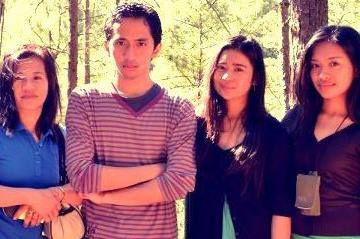

Fritz Bunhian Arcangeles
Database Management Administrator
27 Terry Court Suello Village, Marcos Highway Baguio City 2600
+639279810257
xaero.xiii@gmail.com

A highly competent and organized worker with strong English communications skills with particular emphasis on written communication. Well-mannered, humble and collected with the ability to think rationally and logically during scenarios under pressure. Flexible and adaptable with the ability to grasp new concepts and apply concepts thereof.
Currently seeking a position as a database manager or other related fields that provide extensive experience in employment in said practices; with an ambitious company seeking global modern technological progress, standards, and innovation.
University of the Cordilleras, Baguio City 2016-current
- Deans Lister SY2015-2016 1stTriSem
Saint Louis University, Baguio City 2010-2014
- Deans Lister SY2011-2012 1stSem
- Deans Lister SY2010-2011 2ndSem
- Deans Lister SY2010-2011 1stSem
Port Moresby International School, Port Moresby - Papua New Guinea 2006-2009
- Grade 11-12 Top#1 High Achievement – Business Management
- Grade 11-12 Top#1 High Achievement - Economics
- Grade 9-10 Top#1 High Achievement – Information Technology
Skills/Competencies/Qualifications
- Competent proficiency in English communication skills with emphasis in written communication.
- Competent proficiency in Microsoft Office tools. (Word, Access, Excel, PowerPoint, Publisher)
- Basic and proficient understanding of Macromedia Dreamweaver web development
- Basic and proficient understanding of Java language programming and java development.
- Basic and proficient understanding of mark-up languages involving XML, HTML, HTML/s, dHTML, xHTML
- Proficient understanding of Microsoft operating systems from XP, Vista, 7, 8, 10.
Certificates/Seminars/Accomplishments/Training
ITCS Research Project and Presentation, Certificate of Participation 28th March 2016
- University of the Cordilleras Theatre, Bauio City
Ecolodians of Saint Louis University, Certificate of Membership - August 26, 2012
- Saint Louis University, Baguio City
Entrep Fever 2011 Seminar - March 6, 2011
- Centre for Culture and Arts, Saint Louis University, Baguio City
Entrep Fever 2011 Certificate of Participation - March 1, 2011
- Saint Louis University, Baguio City
Insurance, Savings and Investments Seminar - January 30, 2011
- Saint Louis University Centre for Culture and Arts Theatre, Baguio City
Baguio Trade Marketing Jam Seminar - November 28, 2010
- Convention Centre, Baguio City
Management Seminar - October 3, 2010
- Saint Louis University Burgos Gym, Baguio City
Reading science-fiction, fantasy novels, historical novels, health-oriented fitness, keeping up-to-date with the latest technologies, video games and the gaming industry and the modding community, manga and anime.
Mr. Steven Rowley
Principal and High School Lecturer
Port Moresby International School
PO BOX 276 Boroko
(675) 325 3166
www.pmis.iea.ac.pg/index/index.htm